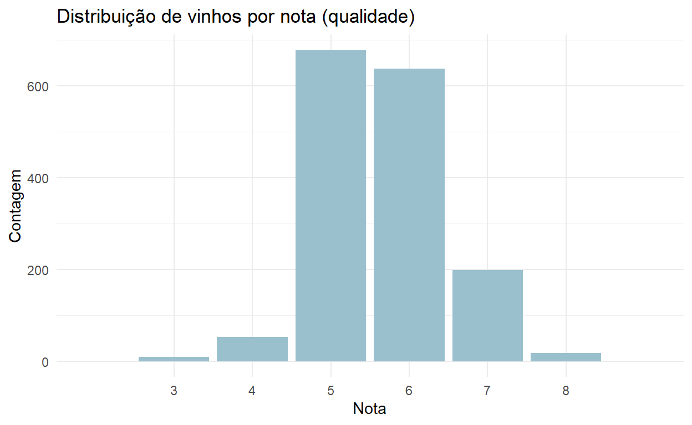
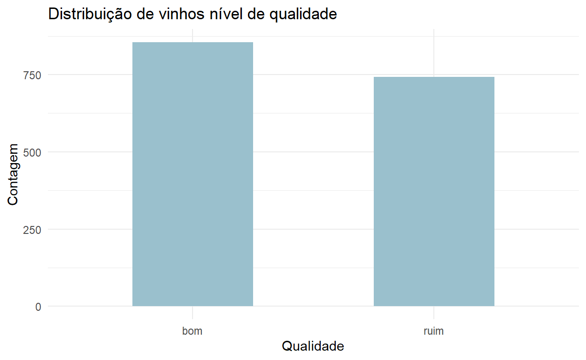
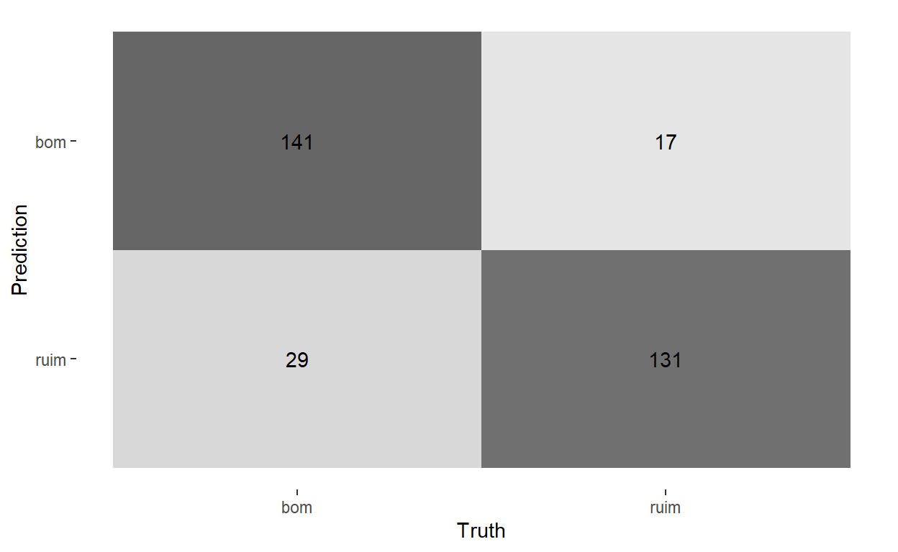

O objetivo principal deste post é apresentar o tidymodels, que é uma coleção de pacotes para modelagem e aprendizado de máquina o qual utiliza os princípios do tidyverse. Para isso, iremos utilizar uma base de dados de qualidade de vinhos e implementar modelos de classificação.
Um dos grandes debates dos interessados em ciências de dados é em relação à superioridade do R ou do Python. Um argumento muitas vezes utilizado para apoiar o Python é que ele possui ferramentas mais adequadas para trabalhos que utilizam aprendizado de máquina, como, por exemplo, o pacote sklearn. A criação do tidymodels é uma tentativa de resposta a esse argumento. Assim como o sklearn, o tidymodels é um framework que reúne em mesmo ambiente diversas funções para modelagem e aprendizado de máquina. E o melhor, para quem está acostumado com o tidyverse, o tidymodels foi construído utilizando seus princípios e notações.
A ideia deste post não é defender o tidymodels, nem compará-lo ao sklearn, mas apresentar como ele pode facilitar a vida do usuário de R que precisam aplicar técnicas de aprendizado de máquina. Para isso, vamos classificar vinhos segundo sua qualidade utilizando regressão logística e random forest.
A fonte dos nossos dados é o UCI Machine Learning Repository que, por sinal, é uma excelente fonte de dados para quem possui interesse em aprender como aplicar modelos aprendizado de máquina. A base que vamos utilizar chama-se Wine Quality Data Set e pode ser baixada neste link. Neste exemplo, usaremos a base de vinhos tintos que está no arquivo winequality-red.csv.
As 1599 observações da base estão organizados da seguinte forma. A variável que queremos prever chamada-se quality e apresenta notas de 0 a 10 dadas aos vinhos. Além dela, existem mais 11 colunas que apresentam características dos vinhos, como densidade, ph, percentual de álcool, entre outras.
Vamos, então, ter uma ideia geral de como são os dados.
library(tidyverse)
library(janitor)
vinhos <- read_csv2("../../dados/winequality-red.csv") %>%
mutate_if(is.character, as.numeric) %>%
na.omit() %>%
clean_names()
glimpse(vinhos)
Observations: 1,597
Variables: 12
$ fixed_acidity <dbl> 74, 78, 78, 112, 74, 74, 79, 73, 78,...
$ volatile_acidity <dbl> 0.700, 0.880, 0.760, 0.280, 0.700, 0...
$ citric_acid <dbl> 0.00, 0.00, 0.04, 0.56, 0.00, 0.00, ...
$ residual_sugar <dbl> 19, 26, 23, 19, 19, 18, 16, 12, 2, 6...
$ chlorides <dbl> 0.076, 0.098, 0.092, 0.075, 0.076, 0...
$ free_sulfur_dioxide <dbl> 11, 25, 15, 17, 11, 13, 15, 15, 9, 1...
$ total_sulfur_dioxide <dbl> 34, 67, 54, 60, 34, 40, 59, 21, 18, ...
$ density <dbl> 0.9978, 0.9968, 0.9970, 0.9980, 0.99...
$ p_h <dbl> 351, 32, 326, 316, 351, 351, 33, 339...
$ sulphates <dbl> 0.56, 0.68, 0.65, 0.58, 0.56, 0.56, ...
$ alcohol <dbl> 94, 98, 98, 98, 94, 94, 94, 10, 95, ...
$ quality <dbl> 5, 5, 5, 6, 5, 5, 5, 7, 7, 5, 5, 5, ...É importante também entendermos a distribuição da nossa variável de interesse. O gráfico abaixo apresenta a quantidade de vezes que cada nota de qualidade aparece na base.
vinhos %>%
count(quality) %>%
mutate(quality = as.character(quality)) %>%
ggplot(aes(x = quality, y = n)) +
geom_col(width = 0.9, fill = "lightblue3") +
scale_x_discrete(expand = expand_scale(0.3)) +
labs(
title = "Distribuição de vinhos por nota (qualidade)",
x = "Nota",
y = "Contagem"
) +
theme_minimal()
Vemos, então, que existe uma concentração de notas 5 e 6 e não há notas muito altas ou muito baixas na base. De qualquer forma, para a nossa análise, vamos apenas considerar duas classes de vinhos: bons e ruins. Consideraremos todos os vinhos com nota menor ou igual a 5 como vinhos ruins e vinhos com notas maiores do que 5 como vinhos bons. Repare abaixo que agora temos uma distribuição entre classes mais equilibrada.
vinhos <- vinhos %>%
mutate(quality = as.factor(ifelse(quality <= 5, "ruim", "bom")))
vinhos %>%
count(quality) %>%
ggplot(aes(x = quality, y = n)) +
geom_col(width = 0.5, fill = "lightblue3") +
labs(
title = "Distribuição de vinhos nível de qualidade",
x = "Qualidade",
y = "Contagem"
) +
theme_minimal()
Uma boa prática em modelos de aprendizado de máquina é separar uma parcela dos dados para serem usados na avaliação final do modelo escolhido. Isso é feito para testar a performance do modelo em dados não vistos anteriormente e também para checar se não ocorre o chamado overfitting (quando nosso modelo prevê com uma precisão razoavelmente maior em dados vistos anteriormente em comparação com previsões usando novos dados). Usaremos 80% da base para treinar e selecionar o melhor modelo e 20% para testá-lo. Isso é feito com a função initial_split(), como mostrado abaixo.
# Carrega o tidymodels
library(tidymodels)
# Defina uma seed para reprodutibilidade do exemplo
set.seed(123)
# Split dos dados
split <- initial_split(data = vinhos, prop = 0.8, strata = quality)
# Dados para treinamento e teste
treinamento <- training(split)
teste <- testing(split)Reparem que na função initial_split() definimos o parâmetro strata como a variável de qualidade. Isso quer dizer que no momento da separação dos dados, a função levará em consideração a proporção de observações de vinhos bons e ruins para mantê-la de maneira similar nos dados de treinamento e dados de teste. O objeto split é uma lista que contém, entre outras coisas, o id (a linha) de cada observação que vai para o conjunto de treinamento. Assim, as funções training() e testing() separam os dados baseados no objeto split.
Qualquer pré-processamento que deve ocorrer antes do treinamento e do teste deve ser inserido aqui. Existe uma lista extensa de opções que você pode checar neste link. No nosso caso, vamos apenas normalizar os preditores, isto é, subtrair a média e dividir pelo desvio padrão cada uma das características do vinho.
preprocess <- recipe(quality ~ ., data = treinamento) %>%
step_normalize(all_predictors()) O tidymodels faz uma analogia a uma receita, por isso o nome da primeira função é recipe. A lógica é, precisamos indicar todos os passos que devemos utilizar para deixar nossos dados prontos para o processo de análise de dados. Na função recipe(), indicamos uma fórmula e um conjunto de dados. A fórmula indica quem é a variável dependente (outcome) e quem são os preditores (predictors). Assim, podemos definir processamentos específicos para cada tipo de variável, como no caso da função step_normalize() que será aplicada apenas aos preditores. A definição do conjunto de dados é importante para o tidymodels saber com base em que ele calculará alguns parâmetros. Por exemplo, no step_normalize a média e o desvio-padrão de cada preditor serão calculados utilizando como base os dados de treinamento e não a base completa de vinhos.
Como nosso objetivo é classificar os vinhos em ruins ou bons, nosso problema demanda algoritmos de classificação. Usaremos aqui a regressão logística, que de forma simples e imprecisa pode ser comparada a uma regressão linear para problemas de classificação, e o random forest, que é um algoritmo baseado em um conjunto de árvores de decisão (para mais detalhes, veja este outro post do nosso blog).
Abaixo, definimos nossos modelos. A ideia não é tunar nenhum dos modelos, mas sim escolher entre um ou outro usando os parâmetros padrão.
# regressão logística
regressao_logistica <- logistic_reg() %>%
set_engine("glm")
# Random forest
random_forest <- rand_forest() %>%
set_engine("ranger") %>%
set_mode("classification")Em ambos os casos, primeiramente chamamos as funções responsáveis por criar os nossos modelos de regressão logística e random forest. Em seguida, definimos os engines, ou seja, especificamos qual pacote ou sistema será usado para treinar o modelo. No caso do random forest ainda definimos o modo classificação, já que esse modelo pode ser usado também para regressões.
Os workflows são responsáveis definir todos os passos necessários para preparar os dados brutos, deixando-os prontos para serem treinados. Nos exemplos abaixo, os nossos workflows são formados por uma receita (que contém o pré-processamento dos dados) e um modelo de classificação.
# Regressão logística
wf_reg_log <- workflow() %>%
add_recipe(preprocess) %>%
add_model(regressao_logistica)
# Random forest
wf_ran_for <- workflow() %>%
add_recipe(preprocess) %>%
add_model(random_forest)Para escolher entre os dois modelos, vamos usar uma técnica chamada validação cruzada. Ela consiste em subdividir os dados (neste caso apenas os dados de treinamento) em partes iguais, separando uma delas para validação e usando as demais para análise. O que chamamos de análise é equivalente a treinamento, mas neste novo conjunto de dados. O mesmo ocorre para a validação, que seria o equivalente a teste. Usaremos no nosso exemplo 5 grupos ou, mais comumente chamado, 5 folds, que serão gerados pela função vfold_cv().
folds <- vfold_cv(treinamento, v = 5, strata = quality)
folds$splits
$`1`
<1023/256/1279>
$`2`
<1023/256/1279>
$`3`
<1023/256/1279>
$`4`
<1023/256/1279>
$`5`
<1024/255/1279>Repare que o split (subdivisão) dos dados possui aproximadamente 1023 observações para análise e 256 para validação. Agora os modelos serão treinados e avaliados em cada uma dessas subdivisões e no final será retornada a média das métricas de cada subdivisão. Usaremos como métrica a acurácia, ou seja, número de previsões corretas dividido pelo número total de previsões. Realizamos todo esse processo usando a função fit_resamples().
# Regressão logística
fit_reg_log <- fit_resamples(
object = wf_reg_log,
resamples = folds,
metrics = metric_set(accuracy)
)
collect_metrics(fit_reg_log)
# A tibble: 1 x 5
.metric .estimator mean n std_err
<chr> <chr> <dbl> <int> <dbl>
1 accuracy binary 0.691 5 0.00933
# Random forest
fit_ran_for <- fit_resamples(
object = wf_ran_for,
resamples = folds,
metrics = metric_set(accuracy)
)
collect_metrics(fit_ran_for)
# A tibble: 1 x 5
.metric .estimator mean n std_err
<chr> <chr> <dbl> <int> <dbl>
1 accuracy binary 0.793 5 0.0101Podemos perceber que a acurácia do random forest é significativamente mais alta do que a da regressão logística. Vamos, agora, verificar se esse modelo mantém a qualidade das previsões em novos dados, ou seja, iremos treinar o modelo usando toda a base de treinamento e realizar as previsões usando a base de teste.
Vamos então treinar um novo random forest usando toda a base de treinamento. Para isso, aplicamos a função fit() no nosso workflow do random forest.
rf_fit_workflow <- fit(wf_ran_for, treinamento)Com o modelo treinado em toda a base de treinamento, podemos agora avaliá-lo na base de teste. Primeiro, vamos gerar as previsões usando a função predict() e usar a função bind_cols() para juntar essas previsões com os dados reais de qualidade.
df_previsoes <- teste %>%
select(quality) %>%
bind_cols(
.,
predict(rf_fit_workflow, teste)
)Em seguida, geramos as métricas de nosso interesse. Para comparar com o resultados da seção anterior, usaremos a métrica acurácia.
accuracy(data = df_previsoes, truth = quality, estimate = .pred_class)
# A tibble: 1 x 3
.metric .estimator .estimate
<chr> <chr> <dbl>
1 accuracy binary 0.855Muito bom! Nosso random forest teve um resultado ainda melhor do que o obtido na validação cruzada para a seleção do melhor modelo. Vamos também entender como ocorre as previsões do modelo para cada classe usando a chamada matriz de confusão.
conf_mat(data = df_previsoes, truth = quality, estimate = .pred_class) %>%
autoplot(., type = "heatmap")
Podemos ver que o modelo previu 158 vinhos como bons, mas 17 deles são considerados ruins. Do mesmo modo, previu 160 vinhos como ruins, errando 29 casos.
Como comentado anteriormente, uma das grandes vantagens do tidymodels é que ele possui uma sintaxe muito amigável e parecida com o tidyverse. Percebemos que na verdade o tidymodels é formado por um conjunto de pacotes que são carregados automaticamente e realizam diferentes tarefas, desde o split dos dados até a avaliação de modelos. Este post mostrou apenas uma pequena parte do tidymodels. Sugiro que aprofundem o conhecimento em relação a esse framework acessando sua página oficial: tidymodels.org.
For attribution, please cite this work as
Castro (2020, May 19). Fulljoin: Prevendo a qualidade de vinhos com o tidymodels. Retrieved from https://www.fulljoin.com.br/posts/2020-05-18-qualidade-de-vinhos-com-tidymodels/
BibTeX citation
@misc{castro2020prevendo,
author = {Castro, Diego},
title = {Fulljoin: Prevendo a qualidade de vinhos com o tidymodels},
url = {https://www.fulljoin.com.br/posts/2020-05-18-qualidade-de-vinhos-com-tidymodels/},
year = {2020}
}